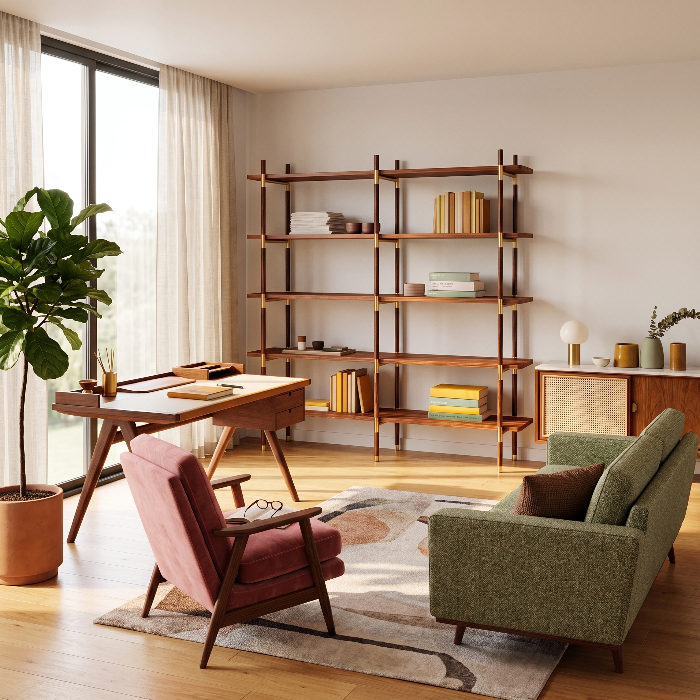

Treinta años de oficio, una misma madera
En Mueblería Hermanos Jota llevamos 30 años diseñando y fabricando muebles que acompañan hogares de generación en generación. Nuestra tradición se sostiene en el trabajo artesanal, la selección cuidadosa de maderas nobles y el respeto por cada detalle. Lo que empezó como un taller familiar hoy es un legado: piezas duraderas, honestas y hechas para vivirlas.

Productos destacados
Una selección de piezas que representan nuestro taller: forma, función y madera bien trabajada.